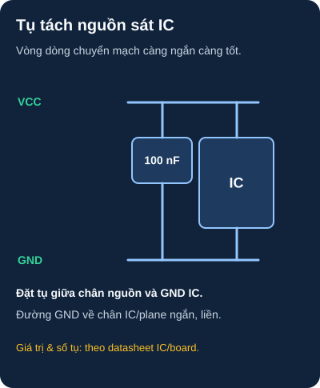
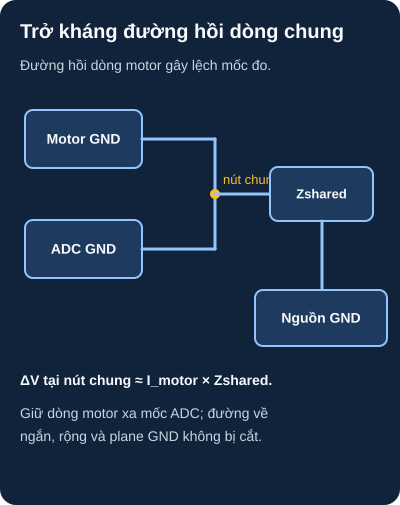

EMC & Thiết Kế PCB Chống Nhiễu
Sự khác biệt giữa một PCB "chạy được trên bàn" và một sản phẩm "ổn định trong công nghiệp" chính là thiết kế EMC tốt.
- Hiểu EMI (Electromagnetic Interference) và EMC (Compatibility)
- Ba cơ chế gây nhiễu: Conducted, Radiated, Common-impedance coupling
- Decoupling capacitor — tại sao, giá trị nào, đặt ở đâu trên PCB
- Ground plane — tại sao làm giảm EMI đáng kể
- Tách vùng analog và digital, kiểm soát đường hồi dòng trên ground plane
- Ferrite bead — lọc nhiễu cao tần trên đường nguồn
- TVS diode — bảo vệ ESD tại connector đầu vào
- Review PCB đồ án của bạn theo checklist EMC
1. Tại sao EMC quan trọng?
Mạch hoạt động tốt trên bàn thí nghiệm nhưng bị nhiễu khi đặt gần motor, nguồn switching, hay đơn giản là trong nhà có nhiều thiết bị điện — đây là vấn đề EMC. Tiêu chuẩn CE/FCC bắt buộc sản phẩm thương mại phải pass EMC test. Với học viên, hiểu EMC giúp debug những lỗi kỳ lạ (sensor sai giá trị khi bật motor, WiFi mất kết nối khi relay bật).
2. Decoupling Capacitor — Nguyên tắc vàng

Đọc mô tả sơ đồ D54-1 bằng chữ
VCC từ nguồn cấp cho chân VCC IC. Một tụ gốm được nối song song giữa VCC và GND ngay sát chân nguồn; dòng xung chạy trong vòng cục bộ từ tụ đến chân VCC, qua IC, về chân GND và trở lại tụ. Rút ngắn đường đi và giữ mặt phẳng GND liên tục. Tụ 100 nF là ví dụ thường dùng; số lượng, loại và vị trí cuối cùng theo datasheet IC và layout PCB.
3. EMC Checklist cho PCB
| Hạng mục | Cách thực hiện trong KiCad | Mức độ quan trọng |
|---|---|---|
| Decoupling cap sát IC | Tụ theo datasheet IC, đặt sát cặp chân nguồn và có đường GND ngắn | ⭐⭐⭐⭐⭐ Bắt buộc |
| Ground plane liên tục | B.Cu → Fill Zone → GND. Tránh khe hở lớn (slot/hole) | ⭐⭐⭐⭐⭐ Bắt buộc |
| Via stitching | Via GND đều khắp board, nối F.Cu GND ↔ B.Cu GND | ⭐⭐⭐⭐ |
| Tách analog/digital | ADC, cảm biến analog → khu vực riêng, không route digital qua | ⭐⭐⭐⭐ |
| Loop kích thước nhỏ | VCC→IC→GND tạo loop nhỏ nhất có thể | ⭐⭐⭐⭐ |
| Ferrite bead nguồn | Nếu datasheet/reference design yêu cầu, chọn ferrite bead theo trở kháng và dòng của rail | ⭐⭐⭐ |
| TVS tại connector | Chọn TVS đúng mức điện áp, điện dung và sơ đồ bảo vệ tại đầu nối | ⭐⭐⭐ |
| Định tuyến PCB | Ưu tiên bố trí đường hồi liên tục, kiểm soát vòng dòng và trở kháng; góc bo là thứ yếu | ⭐⭐ |
4. Common-Impedance Coupling — Đường hồi dòng chung

Đọc mô tả sơ đồ D54-2 bằng chữ
Dòng hồi của motor và mốc GND ADC gặp nhau tại một nút rồi cùng đi qua trở kháng ký sinh Zshared về GND nguồn. Khi dòng motor thay đổi, điện áp tại nút chung thay đổi xấp xỉ I_motor nhân Zshared, làm sai mốc đo ADC. Bố trí dòng motor trở về nguồn qua đường ngắn, rộng; giữ đường tham chiếu ADC tránh đoạn có dòng lớn, đồng thời giữ plane GND liên tục và kiểm tra dòng hồi thực tế.
2: Một khả năng là common-impedance coupling trên đoạn GND dùng chung: dòng motor thay đổi gây sụt áp trên đoạn này, làm mốc ADC dao động. Đo điện áp tại mốc ADC và đầu GND nguồn khi motor chạy để xác nhận; cũng kiểm tra nhiễu nguồn và bức xạ. Giảm trở kháng và chiều dài đường hồi dòng tải, giữ dòng motor khỏi vùng ADC, đặt tụ bypass theo yêu cầu driver và dùng ground plane liên tục. Lọc số chỉ giúp sau khi đường nguồn/mốc đo đã đúng.